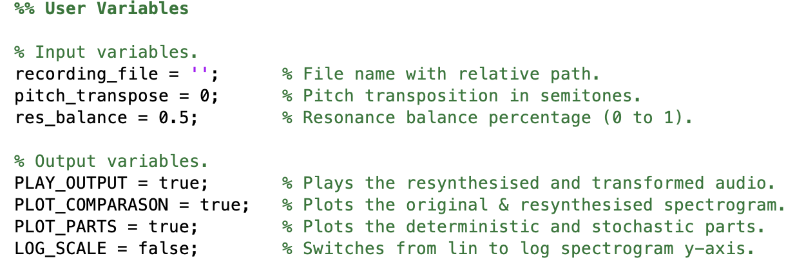
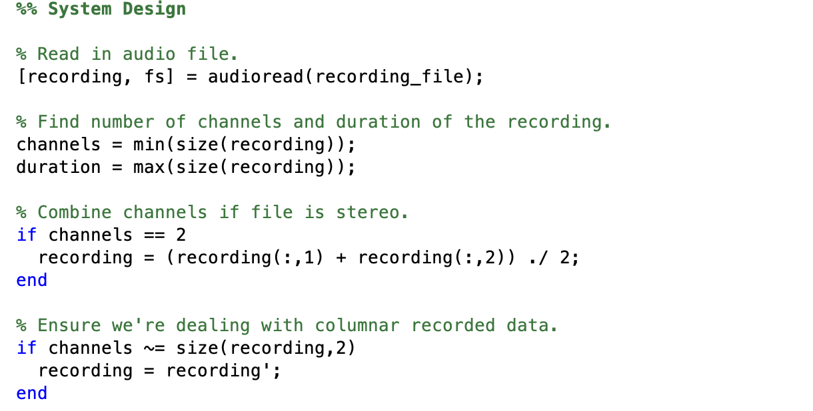
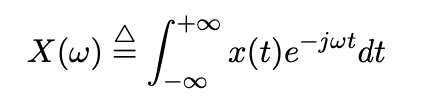
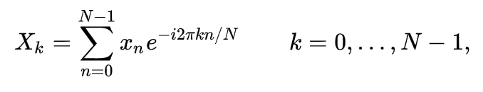
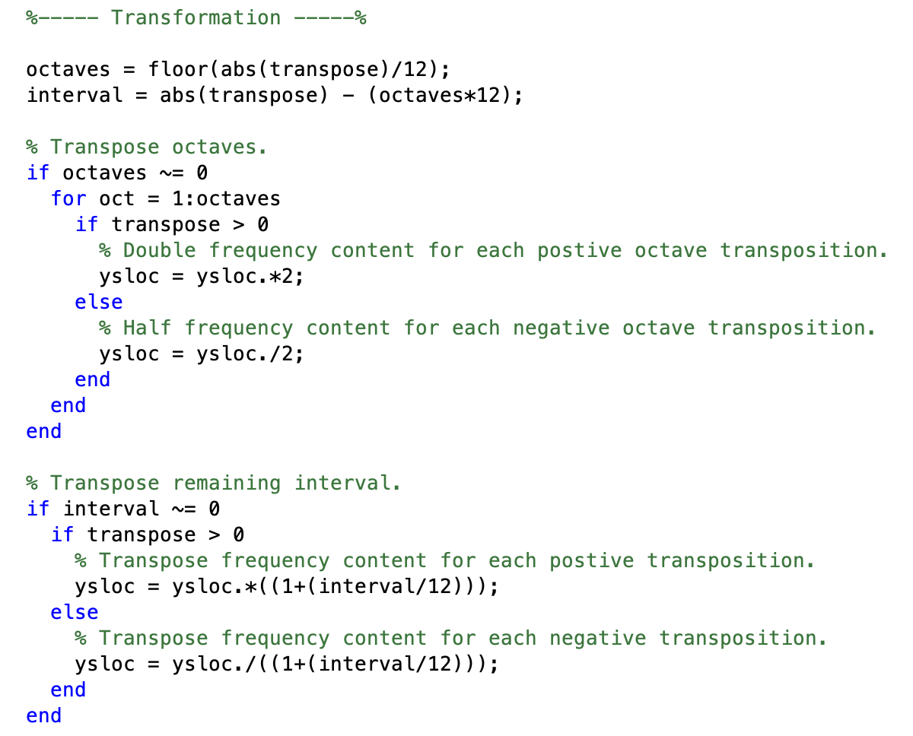
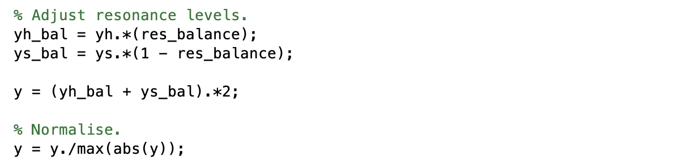

SYSTEM DESIGN
This system design utilises spectral modelling synthesis to perform audio based effects in the form of pitch transposition and resonance amplitude control. Overall, the system separates out the deterministic and stochastic parts of an audio sample before transforming and resynthesising the output. The code utilises and adapts certain MATLAB scripts and functions from the ‘SMSMatlab’ package, developed by the Music Technology Group at Pompeu Fabra University in Barcelona. This package is responsible for separating monophonic audio into Serra’s deterministic and stochastic format, however the code has been altered to allow for pitch transposition and stereo support. A block diagram showing the entire system design can be seen in Figure 5:

Figure 5: System Design Diagram.
At the start of the top level system script, the user is able to define a small selection of variables that will alter the output of the system, including, the pitch transposition, the spectral resonance balance, and the data output’s representation.
Figure 6: System Code - User Input.
The number of audio channels is first checked (mono or stereo) and correctly formatted if needed. For stereo files, the two channels are first combined to a single data column before they are analysed by the system.
Figure 7: System Code - File Analysis.
The system then passes the recording data into the ‘SMSMatlab’ package function, along with the file’s sampling rate, setting defaults, and the user input variables. For this spectral system, a 1025-point Blackman window with an FFT size of 4096 and a threshold of -100dB is used by default.
Figure 8: System Code - SMS Function.
Within the ‘spsmodel’ function, the audio waveform is split into equal segments and transformed using a fast Fourier transform (FFT) to detect prominent frequency peaks within the spectrum. The conventional Fourier transform allows the conversion of a continuous time domain waveform into its sinusoidal frequency components. The most common mathematical definition of a continuous Fourier transform is:
Figure 9: Fourier Transform Equation.
Where ’t’ is the continuous time index in seconds and ‘w’ is the continuous frequency index expressed in radians per second. As digital waveforms are typically sampled and not continuous, the FFT builds from conventional Fourier and instead transforms windowed segments of the signal to return discrete frequency values. The discrete-time FFT is mathematically defined as:
Figure 10: Short Time Fourier Transform Equation.
Where ‘xn’ represents the discrete time-domain samples and ‘Xk’ represents the discrete transformed frequency values. These discrete frequency values often scalp the true value and thus are then interpolated by the ‘spsmodel’ function to find the exact frequency values.
To transform the audio, the sinusoidal content is adjusted based on the number of semitones the user would like to transpose up or down. Pitch transposition is performed in correlation between chromatic intervals and frequency values where each octave up or down relates to frequencies being doubled or halved respectively before transposing the remaining interval. The code used to transform the frequency content can be seen in Figure 11:
Figure 11: System Code - SMS Transformation.
After synthesising the transformed sinusoidal content, the deterministic and stochastic parts extracted by the ‘spsmodel’ function are both returned to the top level system script to be adjusted by the resonance balance. The final output ‘y’ can then be played back to the user with optional spectrograms plotted comparing the input to the output or the synthesised sinusoidal to the noise components spectrums.
Figure 12: System Code - Resonance Balance.